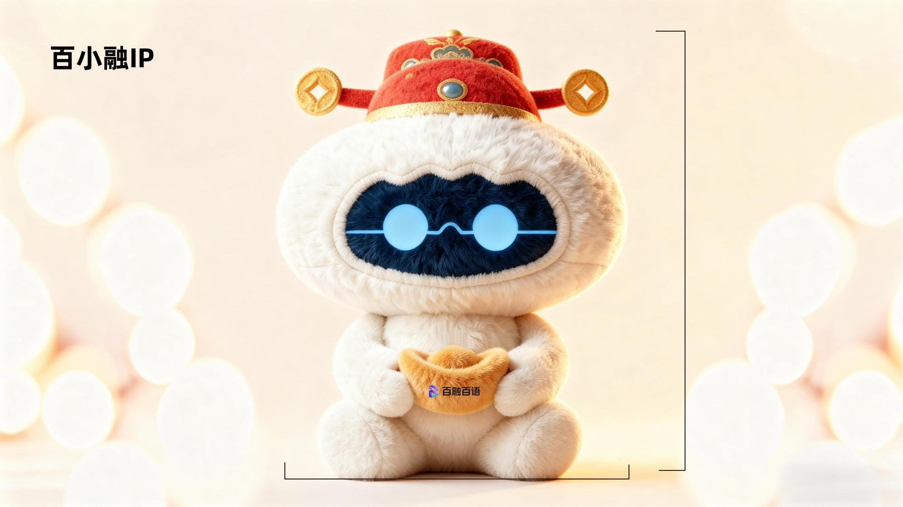

说出唤醒词
靠近玩具，说“小融”，听到响应后直接开始说话。
智能语音玩具
打开电源，连接网络，就可以开始聊天。
唤醒词 小融

先完成这一步
配网时保持机芯开启，并将手机放在玩具附近。
进入“百融百语”小程序的“设备”页面。
点击右上角“+”，再点击“连接设备”。
根据手机提示允许蓝牙及相关权限，等待扫描附近设备。
扫描完成后，点击设备列表中的可用设备。
确认 Wi-Fi 名称，输入正确的 Wi-Fi 密码。
点击“开始配网”，等待设备出现在“我的设备”列表中。
两种方式
靠近玩具，说“小融”，听到响应后直接开始说话。
设备已联网时，短按一次脚部按钮进入双工对话；听到响应后直接开始说话。
保持新鲜
1自动升级
设备联网并满足条件时，系统自动完成更新。
2提示升级
小程序显示升级提示，确认后按照页面指引完成更新。
3可选升级
在设备“固件升级”中查看并选择可安装的版本。
遇到问题
确认机芯电源开关已经开启；开启手机蓝牙及相关权限；将手机靠近玩具后重新扫描。
保持设备开启，长按脚部按钮 10 秒，设备会进入配网模式并尝试重新连接已保存的 Wi-Fi。
保持设备开启，长按脚部按钮 20 秒，设备会清除旧 Wi-Fi 信息并进入配网模式。
确认手机连接的是 2.4GHz Wi-Fi，重新检查 Wi-Fi 名称和密码，并确保路由器网络正常。
确认设备已开机并联网，检查电量；重新说出唤醒词或按一下右脚按钮，也可以关闭电源后再次开启。
靠近玩具，以自然音量清楚说出对应唤醒词；环境嘈杂时可按一下右脚按钮唤醒。
使用须知